Part A
Exploring the Power of Flow Models
Denoising, guided generation, image editing, and optical illusions.
Part A · 1.1
Constructing Noisy Training Inputs
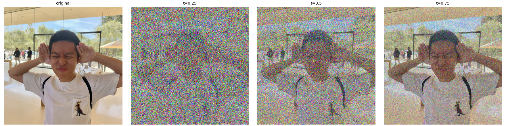
I construct the noisy input by linear interpolation, reusing the same Gaussian noise at all three times:
As t increases, the face, shirt, and background become easier to distinguish because the image contribution grows while the noise contribution shrinks. Thus t = 0 is pure noise and t = 1 is the clean image.
Part A · 1.2
Classical Denoising
The Gaussian baseline is:
Gaussian averaging suppresses noise while also smoothing edges and texture. Among σ = 1, 2, 4, 8, 16, the lowest-MSE choices are 8, 4, and 2 for t = 0.25, 0.50, and 0.75 respectively: stronger noise requires more blur, leaving only edge structure at t = 0.25.
Part A · 1.3
One-Step Denoising
a high quality photo
The model predicts velocity, and the prediction is:
This single prediction recovers more recognizable facial and clothing structure than Gaussian blur by using learned image patterns. At t = 0.25, however, the hair becomes a hat-like shape; with less surviving evidence, plausible reconstruction can differ from the original photograph.
Part A · 1.4
Visualizing Velocity
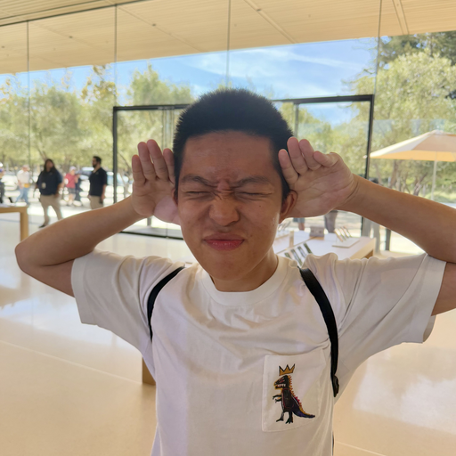
I compare the predicted endpoint update with the known correction and compute their per-pixel RGB RMS error before clipping:
These are corrections, including noise cancellation, rather than finished photographs. With shared display scales, errors highlight the face, clothing, and boundaries; the darker t = 0.75 map indicates a smaller endpoint-update error, which also includes the shrinking factor \((1-t)\).
Part A · 1.5
Iterative Denoising with Euler Sampling
Start at t = 0.50 / step size = 0.02 / 25 updates
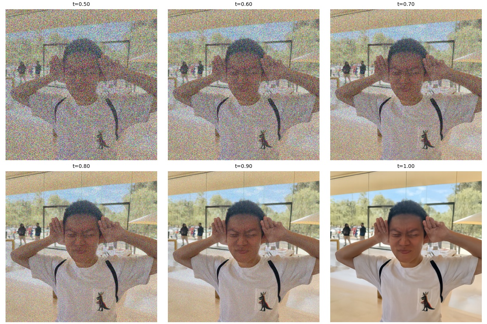
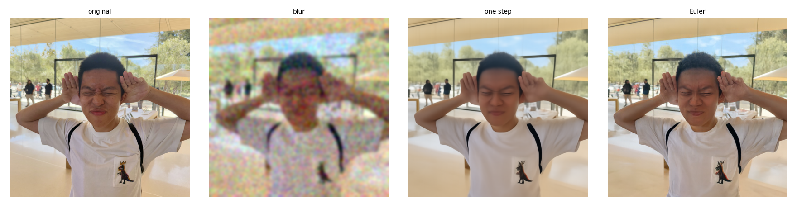
Euler sampling recomputes the velocity at each new state, allowing the trajectory to change direction:
Across 25 steps, noise recedes and hair, clothing, and background details sharpen. For this input, reconstruction MSE is 0.01877 for blur, 0.00538 for one step, and 0.00645 for Euler: sharper detail doesn't mean closer to the original picture.
Part A · 1.6
Generating Images from Noise
Prompt: “a high quality photo” / ordinary conditional sampling


Starting Euler integration at t = 0 turns independent Gaussian noise into images without an input photograph. Despite the generic prompt, all five samples depict people, suggesting that it may have a preference in the learned conditional distribution. Appearance varies across seeds, but several faces and bodies are malformed; ordinary conditional sampling provides neither guaranteed realism nor broad subject diversity in this small sample.
Part A · 2.1
Classifier-Free Guidance
w = 7 / step size = 0.02 / same initial noises as 1.6

I combine conditional and empty-prompt predictions to strengthen the direction associated with the text:
With the same initial noises as 1.6, all five outputs now have recognizable faces and more coherent portrait structure. They also favor similar polished portrait compositions: guidance improves these samples while narrowing their visual variety, and can change identity and composition rather than merely sharpening an existing image.
Part A · 3.1
Image-to-Image Editing
Prompt: “a high quality photo” / starting t = 0.02, 0.04, 0.06, 0.10, 0.14, 0.25, 0.50
Campanile and Personal Photographs

Web Image and Hand-Drawn Inputs
Editing first mixes the input with noise, then follows the guided flow from \(t_{\mathrm{start}}\) to 1. Small starting times erase more evidence and permit larger changes; larger times preserve the tower, faces, and scenery. The web image becomes a photographic person at low t but retains its anime style at high t. For the sparse drawings, low t mostly yields pale surfaces or unrelated objects, while high t preserves line art.
Part A · 3.2
Text-Guided Image Editing
Same three inputs and seven starting times as 3.1
Campanile
Prompt: “a photograph of a rocket on a launch pad”

Personal Photograph 1
Prompt: “a photograph of an astronaut wearing a white spacesuit inside a space station”
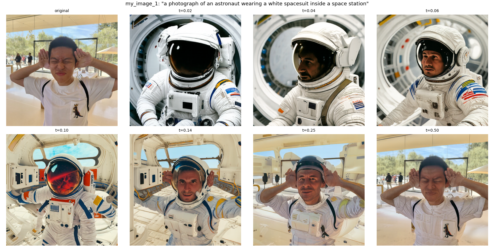
Personal Photograph 2
Prompt: “a photograph of a hiker in a snowy mountain landscape”
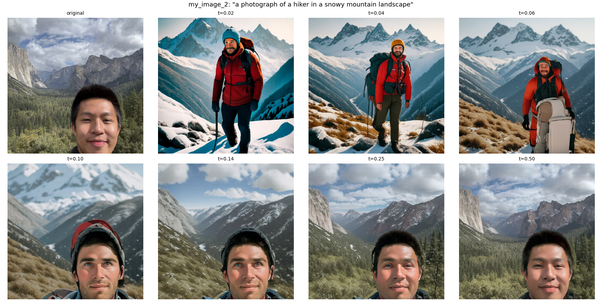
Changing the text changes the guided velocity field while retaining the same noising-and-sampling procedure. Low starting times produce a rocket, a spacesuited astronaut, and a snowy hiker; intermediate times retain more of the tower silhouette or portrait framing. At t = 0.50, the original images largely dominate. Compared with the generic prompt, specific text directs the new content, while the surviving input controls how far that content can depart from the original.
Part A · 3.3
Visual Anagrams

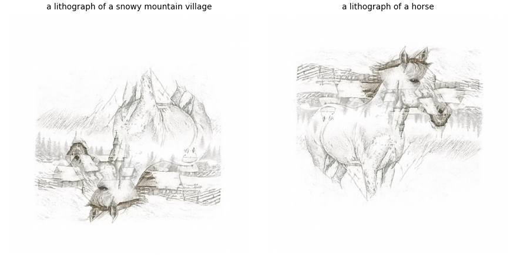
At every Euler step, I average one guided velocity with a second predicted on the 180°-rotated image and rotated back into the original coordinates. Both prompts therefore shape the same pixels throughout sampling. The old man's illuminated forehead becomes the campfire after rotation, with surrounding facial shapes becoming figures. The village/horse pair also changes interpretation, although the horse is clearer than the village. Shared contours make both readings coexist.
Part A · 3.4
Hybrid Images
Low-pass Gaussian: kernel = 265, σ = 16 at 512 × 512
Each Euler update combines the first prompt's broad structure with the second prompt's fine detail:
The Gaussian filter uses σ = 16 and a 265-pixel kernel. Up close, waterfall streams and forest trunks dominate; in the small distant views, those details recede and the skull and cat silhouettes become easier to read. The frequency split shapes the sampling trajectory itself.
Part B
Flow Matching from Scratch
Single-step denoising, time conditioning, and class-conditioned generation on MNIST.
Part B · 1.1
Implementing the UNet
The UNet encodes a 28 × 28 image with convolution and downsampling blocks, compresses its features through a bottleneck, and restores spatial resolution with upsampling blocks. Concatenated skip connections supply fine spatial information from matching encoder stages. The output has the same shape as the input, allowing pixelwise MSE training to recover clean digit intensities while combining local stroke detail with broader shape context.
Part B · 1.2
Visualizing the Noising Process
σ = 0.0, 0.2, 0.4, 0.5, 0.6, 0.8, 1.0
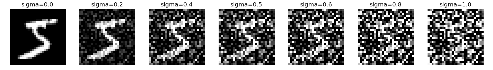
Here the corruption adds Gaussian noise to clean MNIST intensities in [0, 1]:
Increasing σ progressively obscures the digit, although its coarse stroke remains visible through moderate noise. Unlike Part A's interpolation, this process leaves the image coefficient at 1; σ controls only the added noise, and σ = 0 returns the original image.
Part B · 1.2.1
Training a Single-Step Denoiser
D = 128 · batch size = 256 · Adam lr = 10⁻⁴ · σ = 0.5 · 5 epochs
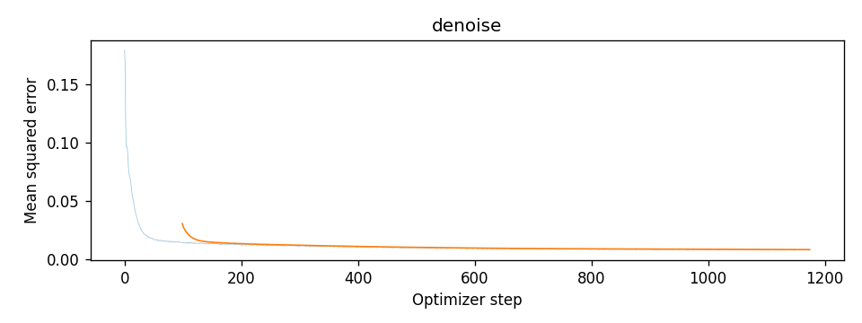
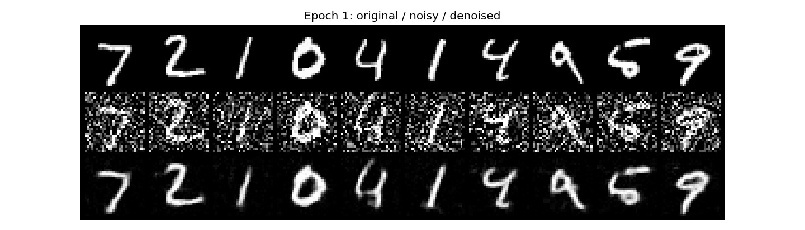
I train on MNIST training images with freshly sampled σ = 0.5 noise and minimize MSE between the UNet output and the clean target. Mean training loss falls from 0.0204 after epoch 1 to 0.00819 after epoch 5. Held-out examples recover clearer strokes and cleaner backgrounds by epoch 5.
Part B · 1.2.2
Out-of-Distribution Testing
Same test image · σ = 0.0, 0.2, 0.4, 0.5, 0.6, 0.8, 1.0
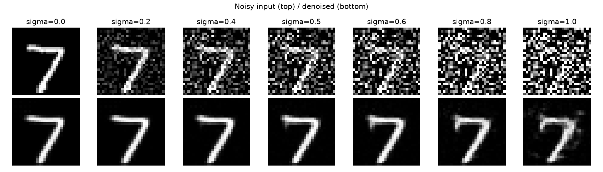
The denoiser is trained only at σ = 0.5 and receives no explicit noise-level input. On this fixed test digit, it preserves a recognizable 7 across most of the sweep, including several unseen noise levels, but the σ = 1.0 result has less stable, noisier strokes. A learned digit prior supports some generalization, while stronger corruption makes the clean image less certain and moves the input farther from the training distribution.
Part B · 1.2.3
Denoising Pure Noise
Fresh UNet · independent Gaussian noise inputs · 5 epochs
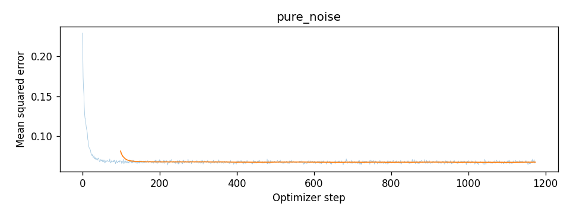
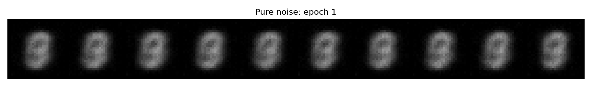
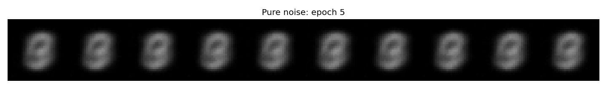
Different pure-noise inputs produce nearly identical blurry, overlapping digit shapes rather than distinct digits. Under MSE, the optimal prediction is the conditional mean; because the input noise and target digit are independent, this becomes the dataset mean:
The output therefore resembles a superposition of MNIST digits.
Part B · 2.1
Adding Time Conditioning to UNet
Two fully connected blocks embed normalized time t and multiply features at the bottleneck output and first upsampling stage. Training uses an interpolated input and targets its path velocity:
The target is velocity rather than the clean image. Time tells the network which part of the noise-to-data path it is modeling; sampling then integrates its changing velocity from t = 0 to 1 with Euler updates.
Part B · 2.2
Training the Time-Conditioned UNet
D = 64 · batch size = 64 · Adam lr = 10⁻² · exponential decay · 10 epochs
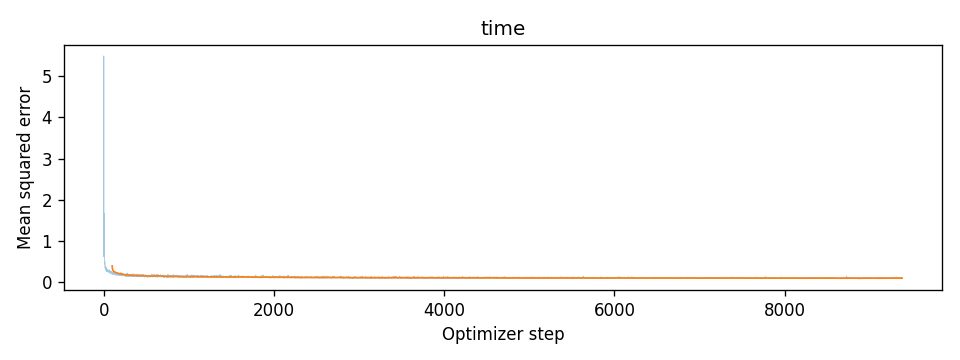
Each training batch receives fresh Gaussian noise and uniformly sampled times, so the UNet learns velocities throughout the interpolation path without running a sampling loop during training. The learning rate decays once per epoch from 0.01 toward 0.001. Mean velocity MSE falls from 0.178 to 0.0932 over ten epochs, indicating a better fit to the training targets; the next section evaluates whether that fit produces recognizable samples.
Part B · 2.3
Sampling from the Time-Conditioned UNet
From the same initial noises, 50 Euler steps produce increasingly coherent strokes across epochs 1, 5, and 10. The final row contains recognizable digit-like forms, but also open loops and distorted shapes with ambiguous identities. Iterative velocity prediction avoids the single averaged output of 1.2.3, yet these samples show that a lower training loss alone does not ensure consistently legible digits. Time conditioning also provides no control over which digit is generated.
Part B · 2.4
Adding Class Conditioning to UNet
One-hot digit labels · class dropout probability = 0.1
I encode labels as ten-dimensional one-hot vectors and add two class-embedding blocks. At the two conditioned stages, features are modulated as:
The products act channelwise. During training, 10% of class vectors are zeroed so the same network also learns unconditional velocities. This all-zero condition differs from the one-hot label for digit 0 and enables conditional/unconditional guidance at sampling time.
Part B · 2.5
Training the Class-Conditioned UNet
D = 64 · batch size = 64 · 10 epochs per experiment
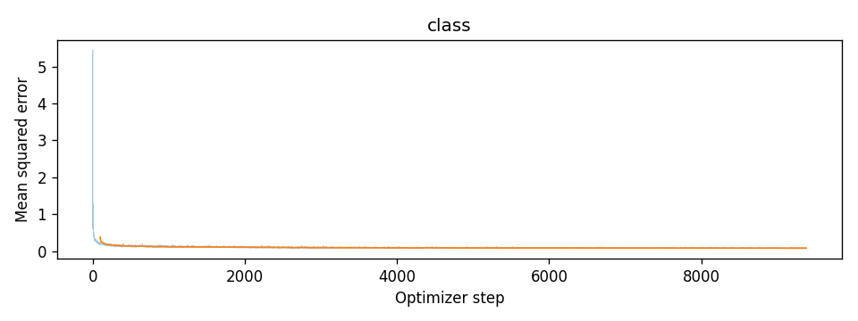
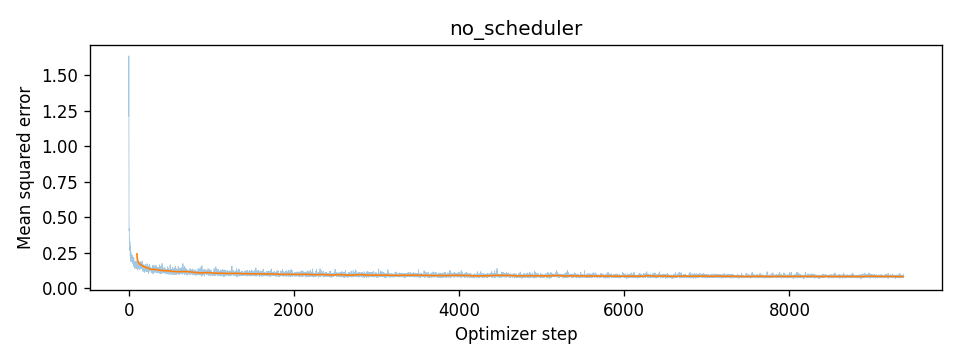
The objective remains velocity MSE, now using both time and a digit label, with random class dropout to train the unconditional branch as well. Both ten-epoch runs show decreasing loss. Final mean losses are 0.08477 with exponential decay and 0.08501 with a constant learning rate of 0.001, indicating similar training fits; generated-image quality must still be compared directly rather than inferred from these close losses alone.
Part B · 2.6
Sampling from the Class-Conditioned UNet
40 images per grid · 4 of each digit · 300 Euler steps · CFG γ = 5
With the Exponential Scheduler
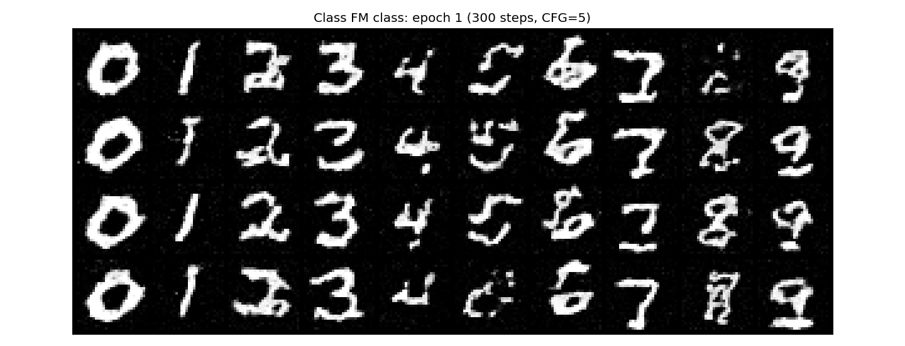
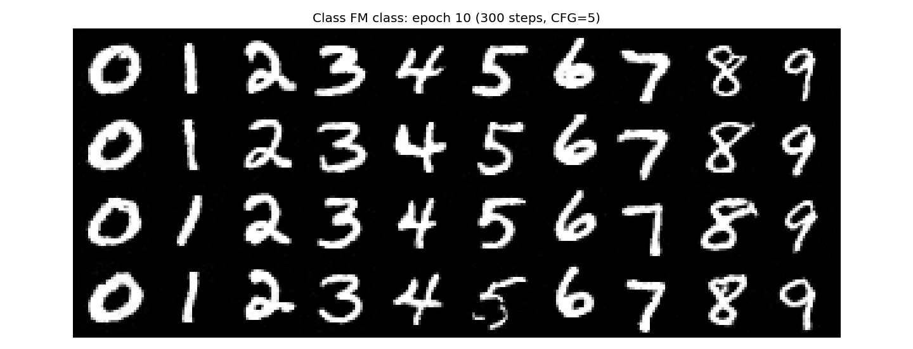
Without the Scheduler
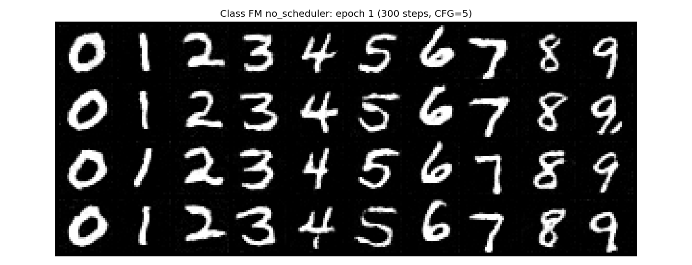
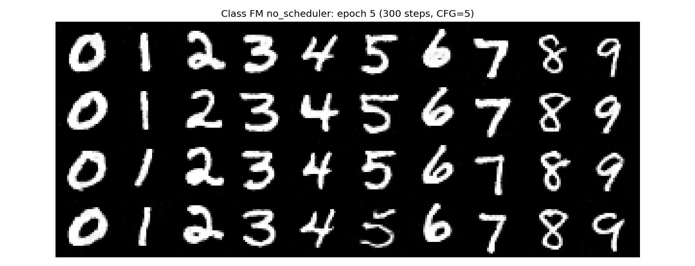
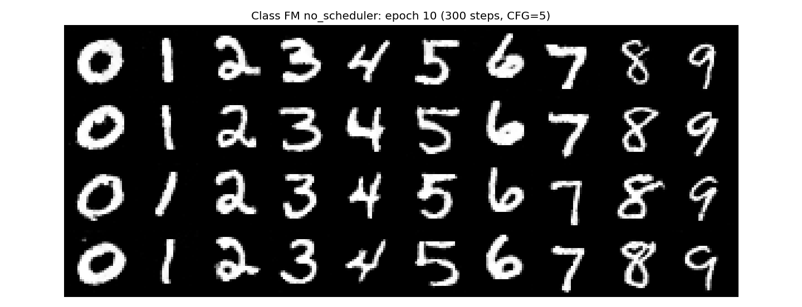
Sampling combines conditional and unconditional velocities using:
Taking 300 Euler steps produces four examples of each requested digit. By epochs 5 and 10, strokes and class identities are substantially clearer than at epoch 1, with variation in handwriting within each column. Class information and guidance steer generation toward the requested category.
For the no-scheduler comparison, I replace the decaying 0.01 learning rate with a smaller constant 0.001 to keep training updates controlled throughout. Both models train independently for ten epochs from the same initialization, and sampling uses matching initial noises. Their epoch-10 grids have similar legibility and class control, with differences in stroke shape and thickness; this comparison supports retaining visual quality with the chosen constant rate.